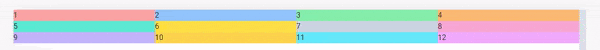
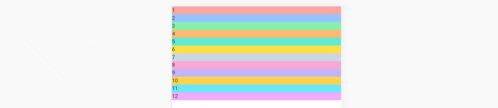
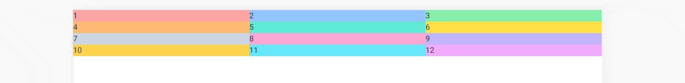

Nowadays, when most users access the Internet on mobile devices, we wouldn't have much use for grid if it wasn't for responsiveness.
But what exactly do we mean by "responsiveness"?
Responsive web design is a design and development approach that ensures a website or web application adjusts its layout, images, and functionalities to suit different devices, like desktops, tablets, or smartphones. The main aim is to provide an optimal viewing and interaction experience — easy reading and navigation with a minimum of resizing, panning, and scrolling — across a wide range of devices.
To make a grid responsive in Tailwind CSS we need to use breakpoints.
A breakpoint in Tailwind CSS refers to a specific viewport size at which the layout or design of a website or application changes to adapt to different screen sizes.
These breakpoints are represented as prefixes to the utility classes, such
as sm , md , lg , xl ,
and 2xl, which correspond to different minimum widths.
We'll study breakpoints in more detail in future lessons, but for now let's just look at some examples.
This is how our grid looks like right now:
The problem is that no matter how we resize the browser window, the grid is always divided into 4 columns.
4 columns make sense on big screens, but on phones they are obviously unusable.
So let's add a breakpoint to our grid to have a different number of columns on different screens.
It is very easy. To use a breakpoint, we must first add a prefix to the
class, e.g.: lg (lg = large) and then define what should happen
above this breakpoint.
For example, let's add lg:grid-cols-2, which means that
on large screens we want our 4 columns to turn into
2 columns.
And now, when we start to increase the size of the browser and pass the
lg breakpoint (above 1024px wide) our grid will
change from 4 columns to 2 columns.
Nice! But it doesn't solve our problem with a mobile view. Let's deal with it now.
The mobile-first approach in web design is a development strategy that prioritizes the creation and optimization of a website for mobile devices before scaling it up to larger screens, such as tablets and desktops.
In practice, this means starting with the smallest screen size for your design and layout, and then progressively enhancing the design for larger screens using CSS media queries.
What exactly does this mean in practice?
This may seem a bit counterintuitive, but it works like this:
When we design our layout, we should start by defining how our grid should look like in the mobile view.
Note that if a class specifying the number of columns doesn't have a defined breakpoint in front of it, it means it's designed for mobile view.
Let's change our grid so that it only has one column for the mobile view.
Remember that when defining the number of columns for the mobile view, we specify the class without any breakpoint.
In the mobile-first approach, a mobile view is a default option.
We will have no one column on larger screens as well, but we'll fix that soon.
Now we will gradually add more breakpoints, beyond which the number of columns will increase.
Let's start with the vertical tablet view, i.e. a medium-sized screen (over
768px).
We want to have 2 columns on medium screen size, so we add
md breakpoint and then add grid-cols-2 class.
And now, when we increase the size of the browser window and exceed the
width of 768px (i.e. breakpoint md), the layout
will change from 1 to 2 columns.
We want to have 3 columns on large screens
(1024px), so let's add lg:grid-cols-3 to our grid.
And now, when we increase the size of the browser window and exceed the
width of 1024px (i.e. breakpoint lg), the layout
will change from 2 to 3 columns.
4 columns sound reasonable for a laptop view, which is
defined as extra large (xl) screens (above
1280px), so let's add xl:grid-cols-4 to the grid.
After resizing the view to the extra-large size 3 columns change to 4 columns.
What about extra extra large screen size?
Tailwind has a breakpoint dedicated for this - 2xl which is
dedicated for screens above 1536px.
Let's add 2xl:grid-cols-6 class to our grid so that on the
biggest screen we can enjoy 6 columns.
And just like in the previous examples - when we exceed a certain width (in
this case 1536px) the number of columns will change from 4 to
6.
When designing a responsive grid, I like to imagine it as an inverted pyramid.
Unlike the regular pyramid, which is wide at the base and tapers upwards, the inverted pyramid is narrow at the base and widens upwards - just like our grid.
At the base (mobile view) there is only one stone (one column), but as it grows (the screens expand) the number of stones (columns) increases.
Alright, that was quite a long lesson. The concept of the responsive grid can be a bit tricky at first, so feel free to spend some time experimenting on your own.
When you're ready, click "next" to start the next lesson.
Note: If you want to practice on your own and have a look at more examples you can play with our grid generator.